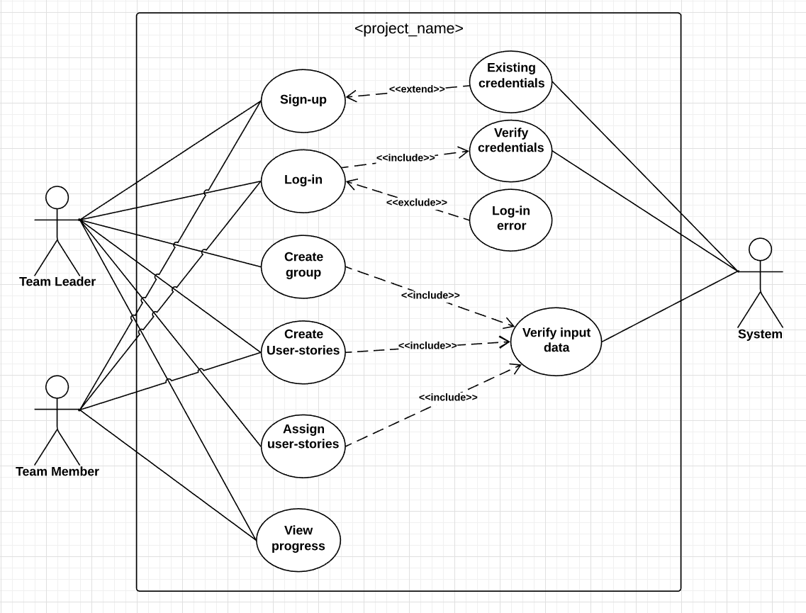

Introduction
Purpose
The purpose of this document is to represent the team management system "TeamTrack" in a detailed form. This SRS documents all segments of the aforementioned "TeamTrack" system.
Document Conventions
Standard typographical conventions will be reserved during the project work. The fonts and the color will be adjusted in such a way so that the clients can easily grasp the complexities and hierarchy for precedent functions.
Intended Audience and Reading Suggestions
This document is intended for the design team who will involve the developers with the requirement of the project. This documentation will be containing each and every detail of the project i.e. the frameworks, the platforms etc
Product Scope
This web app we’re building is a tool for developers, aiding them in managing large scale agile framework projects. Developers will get an overall outlook on unimplemented tasks and their designated role in completing them.
References
....
Overall Description
Product Perspective
The perspective of this product is to manage a team effectively and track the overall team progress by implementing SCRUM agile framework.
Product Functions
The product will have two groups of actors :
i) Team leader
ii) Team member.
Functionality of the product includes :
- A user will be able to make a group and said user will take the role of ‘Team Leader’.
- The ‘Team Leader’ will be able to add ‘Team member’ to the group.
- All users will be able to add ‘user stories’ to the ‘Product backlog’.
- The ‘Team Leader’ will be divide the ‘user stories’ into ‘sprints’.
- All users will be able to assign ‘user stories’ to ‘Team member’(s).
- The system will show the group progress in graphical charts.
- The system will include options for OCR and/or voice recognition.
User Classes and Characteristics
This product includes two user classes
- Team Leader
- Team Member
Operating Environment
Operating environments of this product :
- Distributed Database
- Operating System : Android (Cell phone), Windows (Computer)
- Database: SQL Database
- Hardware Platform: Cell Phone and PC
Design and Implementation Constraints
Constraints include:
- Class diagram and its implementation
- Automatic SQL commands calling with the help of API
- Implementing the database using the centralized database management system.
User Documentation
Users will be able to read F.A.Q within the website to be familiarized with the platform.
Assumptions and Dependencies
The OCR and Voice-to-text Libraries used in this system can have an impact on it.
External Interface Requirements
User Interfaces
WebApp:
- Front-end : HTML5, CSS3, Bootstrap, JavaScript.
- Back-end : PHP, mySQL, Laravel framework.
Mobile App (Android):
- Java
Hardware Interfaces
- Web browser
- Android smartphone
Software Interfaces
Software Interfaces are following:
- Since most of the users are Windows user we have selected Windows as the primary operating system.
- For the same reason, in mobile user we have picked the Android as the primary OS
- To interact with the database, we’ll be using AJAX.
- Laravel will be used to interact with the centralized server.
- In order to save the records SQL database will be used.
Communications Interfaces
This will support email verification using Gmail, all kinds of web browser and most likely all updates of Android devices.
System Features
While most of the features will be available for both the actors (Team Leader and Team member), Team members are restricted from some privileges.
Create Groups
Description and Priority
- This feature is only reserved for team leaders. They will be allowed to create groups where they will interact with their members.
Stimulus/Response Sequences
- Team members will be able to create groups, if groups with said name already exist, the system will prompt them to choose a new name.
Create user-stories
Both the team members and team leaders will be able to create user-stories, which are essentially small tasks.
Create user-stories with OCR
Both the team members and team leaders will be able to create user-stories from handwritten post-its or their footnotes using the camera on their phone.
Assign user-stories
This feature is reserved for the team leaders only. The team leader can designate each user-story to whichever team member he choses or deems appropriate.
View Progress
All the members within the group can view their progress, time taken for them to complete each task assigned to them. This will be in graphical representation.
Other Nonfunctional Requirements
Performance Requirements
Performance is one of our major concerns. Since the core objective of this project is to efficiently manage large scale projects, we have to prioritize time. We shall achieve this through minimal response times when creating groups and user-stories.
Safety Requirements
Since this is an online platform, we won’t have to deal with safety issues much often. But to avoid unnecessary risks, and potential crises, team members and team leaders will be able to report other users for violating community standards
Security Requirements
Users will be able to sign up with their Google accounts. This will verify them as legit users. Since user privacy is concerned, user’s confidential information will not be visible to the organizers.
Software Quality Attributes
Adaptability
We will try to make it as adaptable as possible so that it can tolerate changes in the environment without any intervention
Availability
The groups will remain within the database until the team leader choses to close the group. There will be no time constraints.
Maintainability
The platform will be maintained to increase its reusability and performance.
Other Requirements
1. Integration with payment system required before deploying the system.
2. Verify data and implement security features into the system.
Appendix A: Glossary
Team Leader:
Creates team/ group, adds members, adds ‘user stories’, assigns ‘user stories’, view progress.
Team member:
View tasks (‘user stories’) assigned, update progress, adds ‘user stories’, assigns ‘user stories’, view progress.
Appendix B: Analysis Models
Use Case Diagram:
Sign up Extended Use Case Diagram
Use case name: Sign up to TeamTrack.Actor: Team Leader/ Team Member
Brief overview: The actor makes an account on the TeamTrack system
Type: Primary
Typical course of events:
| 1. Actor goes to TeamTrack.com | 2. System responses with sign up page. |
| 3. Actor enters email, username and password. | 4. System creates a new account for actor and logs-in the actor in the account. |
Alternative course of actions:
1) Email/ username/ password field empty.
2) Email already used for another account. Suggest using different email/Password recovery
3) Invalid username and password. Show error message
.png)
Log in Extended Use Case diagram
Use case name:Log in to TeamTrack.Actor: Team Leader/ Team Member
Brief overview: The actor logs in to their account on the TeamTrack system.
Type: Primary
Typical course of events:
| 1. Actor goes to TeamTrack.com | 2. System responses with login page. |
| 3. Actor enters email, username and password. | 4. System checks credentials and redirects to home page. |
Alternative course of actions:
1) Email/ username/ password field empty.
2) Invalid username and password. Show error message. Suggest password recovery.
.png)
Create Group Extended Use Case diagram
Use case name:Create groupActor: Team Leader
Brief overview: The actor makes a group/team.
Type: Primary
Typical course of events:
| 1. Actor goes to TeamTrack.com | 2. System responses with homepage |
| 3. Actor clicks ‘Group’ option from the navbar. | 4. System redirects to ‘Group’ page. |
| 5. Actor navigates to ‘create group’ segment of the page adds ‘Team members’ with their email address and names the group. | 6. System makes a list of the ‘Team member’s added. And, informs the ‘Team member’. |
Alternative course of actions:
1) Invalid email address. Show error message.
.png)
Create User-stories Extended Use Case diagram
Use case name:Create user-storiesActor: Team Leader/ Team Member
Brief overview: Actor creates user-stories/ tasks to be completed.
Type: Primary
Typical course of events:
| 1. Actor goes to TeamTrack.com | 2. System responses with homepage |
| 3. Actor clicks ‘User-stories’ option from the navbar. | 4. System redirects to ‘User-stories’ page. |
| 5. Actor navigates to add user-stories part of page and inputs User-story and clicks ‘add’ | 6. System stores the data into the database, shows the updated list of user-stories and waits for another input. |
Alternative course of actions:
1) Invalid email address. Show error message.
2) User inputs duplicate user-story. Show error message.
3)Data save error. Show error message. Suggest user to try again later.
.png)
Assign User-stories Extended Use Case diagram
Use case name:Assign user-storiesActor: Team Member
Brief overview: Actor assigns user-stories/ tasks to ‘Team member’(s).
Type: Primary
Typical course of events:
| 1. Actor goes to TeamTrack.com | 2. System responses with homepage |
| 3. Actor clicks ‘User-stories’ option from the navbar. | 4. System redirects to ‘User-stories’ page. |
| 5. Actor selects user-stories. | 6. System shows a list of additional commands. |
| 7. Actor clicks on ‘Assign’ and assigns the user-story from the drop down list. | 8. System saves the information to the database. System shows confirmation message. |
Alternative course of actions:
1) Data save error. Show error message. Suggest user to try again later..
.png)
View Progress Extended Use Case diagram
Use case name: View ProgressActor: Team Leader/Team Member
Brief overview: Actor views the progress of the project.
Typical course of events:
| 1. Actor goes to TeamTrack.com | 2.System responses with home page. The home page contains an overview of progress in graphs. |
.png)
Business Case and Gartner's Predictions
Business Case
Everyone tries to make a good business model. In order to do so, the platform will be free for the team members and team leaders. But if their project takes more than 1 month to complete, they will be charged on a monthly basis to continue their work within this platform.
Gartner’s Predictions in technology trends include :
Autonomous systems, Blockchain, Augmented Analytics, Edge Systems, Smart Spaces, AI-Driven Development, Immersive Experiences, Privacy and Ethics and Quantum Computing.
Thereby a project like ours, which aids in managing an agile framework development will greatly impact the tech industry.